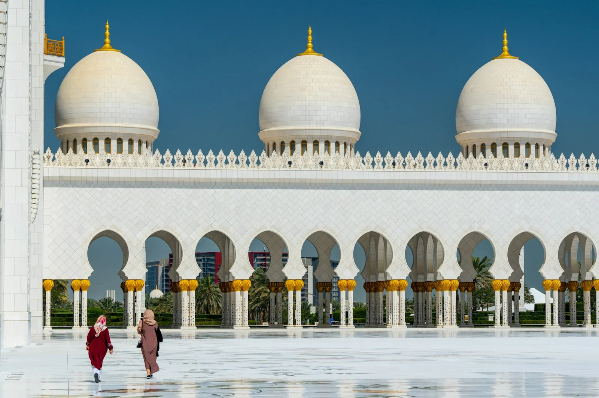

Plan Your Umrah
Rencanakan perjalanan suci Anda dengan jelas dan terstruktur. Mulai dari estimasi biaya, itinerary, hingga checklist persiapan. Semuanya ada di sini.
Rencanakan perjalanan suci Anda dengan jelas dan terstruktur. Mulai dari estimasi biaya, itinerary, hingga checklist persiapan. Semuanya ada di sini.
Gambaran biaya untuk membantu Anda merencanakan budget umrah secara realistis.
| Komponen | Estimasi (IDR) |
|---|---|
| Tiket Pesawat (PP) | 8.000.000 - 15.000.000 |
| Hotel Makkah (per malam) | 500.000 - 2.500.000 |
| Hotel Madinah (per malam) | 400.000 - 2.000.000 |
| Visa Umrah | 500.000 - 1.000.000 |
| Transport Lokal | 500.000 - 1.500.000 |
| Makan (per hari) | 100.000 - 300.000 |
| Asuransi | 200.000 - 500.000 |
| Total Estimasi (9 hari) | 15.000.000 - 35.000.000 |
* Biaya dapat bervariasi tergantung musim keberangkatan, waktu pemesanan, dan preferensi pribadi Anda. Harga di atas adalah perkiraan untuk tahun 2025-2026.
Pilih durasi perjalanan yang sesuai dengan waktu dan kenyamanan Anda.
Tiba di Bandara King Abdulaziz, Jeddah. Transfer ke Makkah dan check-in hotel. Istirahat dan persiapan niat umrah.
Berihram dari miqat, melaksanakan Tawaf (7 putaran mengelilingi Ka'bah), Sa'i (7 kali antara Safa dan Marwah), dan Tahallul (memotong rambut). Umrah selesai.
Memperbanyak ibadah: sholat di Masjidil Haram, membaca Al-Quran, berdoa di Multazam dan Hijr Ismail. Tawaf sunnah jika diinginkan.
Berangkat ke Madinah via Haramain High Speed Train (~2,5 jam) atau bus. Check-in hotel dan sholat di Masjid Nabawi.
Ziarah ke Raudhah, Makam Rasulullah SAW, Masjid Quba, Jabal Uhud, dan tempat bersejarah lainnya. Memperbanyak ibadah di Masjid Nabawi.
Belanja oleh-oleh, ibadah terakhir di Masjid Nabawi, dan persiapan keberangkatan pulang.
Transfer ke bandara Madinah (Prince Mohammed bin Abdulaziz) atau kembali ke Jeddah untuk penerbangan pulang ke Indonesia.
Tiba di Bandara King Abdulaziz, Jeddah. Transfer ke Makkah, check-in hotel, dan istirahat setelah perjalanan panjang.
Berihram, melaksanakan Tawaf, Sa'i, dan Tahallul. Fokus penuh pada ibadah umrah tanpa terburu-buru.
Tiga hari penuh untuk ibadah di Masjidil Haram. Sholat berjamaah, tilawah Al-Quran, doa di Multazam, dan Tawaf sunnah. Waktu lebih leluasa untuk khusyuk.
Mengunjungi Jabal Nur (Gua Hira), Jabal Tsur, Arafah, Muzdalifah, dan Mina. Mengenal lebih dalam sejarah Islam.
Berangkat ke Madinah via Haramain Train. Check-in hotel dan sholat di Masjid Nabawi.
Ziarah ke Raudhah, Makam Rasulullah SAW, Masjid Quba, Jabal Uhud, Masjid Qiblatain, dan Kebun Kurma. Memperbanyak sholat di Masjid Nabawi.
Hari santai untuk belanja oleh-oleh, ibadah terakhir, dan persiapan keberangkatan.
Transfer ke bandara dan penerbangan pulang ke Indonesia dengan hati yang tenang.
Tiba di Jeddah, transfer ke Makkah. Istirahat total setelah penerbangan panjang untuk memulihkan tenaga.
Berihram, melaksanakan Tawaf, Sa'i, dan Tahallul dengan tenang dan penuh kekhusyukan.
Empat hari penuh untuk ibadah di Masjidil Haram. Sholat di berbagai waktu, tilawah, doa di Multazam dan Hijr Ismail, serta Tawaf sunnah. Termasuk hari istirahat.
Perjalanan sehari ke Taif, kota sejuk di pegunungan. Mengunjungi Masjid Abdullah bin Abbas, kebun buah, dan menikmati udara segar. Kembali ke Makkah sore hari.
Mengunjungi Jabal Nur (Gua Hira), Jabal Tsur, padang Arafah, Muzdalifah, dan Mina. Menghayati jejak sejarah Rasulullah SAW.
Berangkat ke Madinah via Haramain High Speed Train. Check-in hotel dan sholat di Masjid Nabawi.
Ziarah lengkap: Raudhah, Makam Rasulullah SAW, Masjid Quba, Jabal Uhud, Masjid Qiblatain, Masjid Tujuh, dan Kebun Kurma. Sertakan hari istirahat untuk refleksi pribadi.
Hari santai untuk belanja oleh-oleh (kurma, air zamzam, minyak wangi), ibadah penutup di Masjid Nabawi.
Transfer ke bandara dan penerbangan pulang ke Indonesia. Perjalanan paling santai dan bermakna, tanpa terburu-buru.
Tips memilih akomodasi dan transportasi yang tepat untuk perjalanan umrah Anda.

Booking.com, Agoda, dan direct booking ke hotel. Bandingkan harga di beberapa platform untuk mendapat penawaran terbaik.
Makkah ke Madinah dalam ~2,5 jam. Nyaman, cepat, dan terjangkau. Booking via aplikasi SAR atau di stasiun.
Bus antar kota resmi Saudi Arabia. Lebih murah dari kereta, perjalanan ~5-6 jam Makkah ke Madinah.
Fleksibel untuk rombongan kecil. Bisa dinegosiasi untuk city tour atau antar kota.
Untuk transportasi lokal dalam kota. Download aplikasi sebelum berangkat. Careem lebih populer di Saudi.
Pastikan semua persiapan sudah lengkap sebelum berangkat ke Tanah Suci.
Baca panduan lengkap umrah mandiri atau lihat paket layanan kami untuk membantu perjalanan Anda.